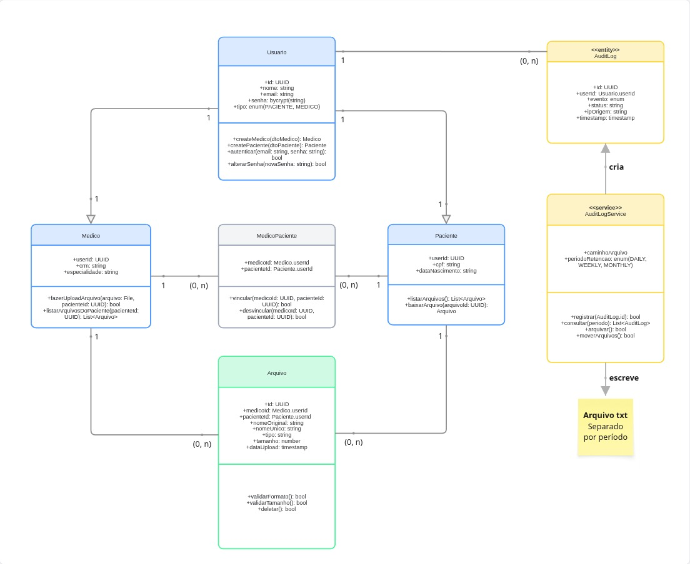

Diagrama de Classes
Visão Geral
O diagrama de classes representa a estrutura do sistema HealthTech, organizando entidades de domínio, tabelas associativas e serviços. O modelo cobre autenticação, gerenciamento de arquivos médicos e auditoria, com estratégia híbrida de armazenamento para logs.

Visualização da Imagem{kind=link}
Entidades
Usuario
Classe base que centraliza autenticação e dados comuns a todos os usuários da plataforma.
Atributos:
id: UUID: identificador úniconome: string: nome completoemail: string: email único de autenticaçãosenha: bycrypt(string): senha armazenada como hash bcrypttipo: enum(PACIENTE, MEDICO): diferencia o perfil do usuário
Métodos:
createMedico(dtoMedico): Medico: cria perfil de médico vinculadocreatePaciente(dtoPaciente): Paciente: cria perfil de paciente vinculadoautenticar(email: string, senha: string): bool: valida credenciaisalterarSenha(novaSenha: string): bool: atualiza senha com novo hash
Paciente
Especialização de Usuario que representa pacientes da plataforma. Herda atributos de autenticação e adiciona dados específicos.
Atributos:
userId: UUID: FK para Usuariocpf: string: CPF único do pacientedataNascimento: string: data de nascimento
Métodos:
listarArquivos(): List<Arquivo>: retorna arquivos vinculados ao pacientebaixarArquivo(arquivoId: UUID): Arquivo: realiza download de arquivo autorizado
Medico
Especialização de Usuario que representa médicos da plataforma. Herda atributos de autenticação e adiciona dados profissionais.
Atributos:
userId: UUID: FK para Usuariocrm: string: registro profissional únicoespecialidade: string: área de atuação
Métodos:
fazerUploadArquivo(arquivo: File, pacienteId: UUID): bool: envia novo arquivo vinculado a um pacientelistarArquivosDoPaciente(pacienteId: UUID): List<Arquivo>: lista arquivos de um paciente vinculado
MedicoPaciente (tabela associativa)
Resolve o relacionamento N: N entre médicos e pacientes. Um médico pode atender vários pacientes e um paciente pode ser atendido por vários médicos.
Atributos:
medicoId: Medico.userId: FK compostapacienteId: Paciente.userId: FK composta
Métodos:
vincular(medicoId: UUID, pacienteId: UUID): bool: cria vínculodesvincular(medicoId: UUID, pacienteId: UUID): bool: remove vínculo
Arquivo
Representa metadados de exames e documentos médicos. O binário real é armazenado no Google Cloud Storage; esta entidade guarda apenas referências e metadados.
Atributos:
id: UUID: identificador únicomedicoId: Medico.userId: FK para o médico que fez o uploadpacienteId: Paciente.userId: FK para o paciente vinculadonomeOriginal: string: nome do arquivo enviado pelo usuárionomeUnico: string: nome interno utilizado no storagetipo: string: extensão (pdf, jpg, jpeg, png)tamanho: number: tamanho do arquivo em bytesdataUpload: timestamp: momento do upload
Métodos:
validarFormato(): bool: verifica se o tipo do arquivo é permitidovalidarTamanho(): bool: verifica se o tamanho está dentro do limitedeletar(): bool: remove o arquivo do storage e os metadados do banco
Auditoria: Estratégia Híbrida
A auditoria utiliza dois níveis de armazenamento para combinar desempenho e economia de recursos.
AuditLog (entity)
Tabela de logs no banco que armazena eventos recentes. Permite consulta rápida via SQL para o período ativo.
Atributos:
id: UUID: identificador único do loguserId: Usuario.userId: FK para o usuário que gerou o eventoevento: enum: tipo do evento (LOGIN_SUCCESS, UPLOAD_SUCCESS, ACCESS_DENIED, etc.)status: string: resultado do eventoipOrigem: string: endereço IP da requisiçãotimestamp: timestamp: momento exato do evento
AuditLogService (service)
Serviço responsável por toda a lógica de auditoria. Não é uma tabela do banco, mas uma classe de comportamento que orquestra escrita, leitura e arquivamento de logs.
Atributos:
caminhoArquivo: string: diretório onde os arquivos.txtarquivados são salvosperiodoRetencao: enum(DAILY, WEEKLY, MONTHLY): frequência da rotação de arquivos
Métodos:
registrar(AuditLog.id): bool: insere novo log na tabelaconsultar(periodo): List<AuditLog>: consulta logs (banco para recentes, arquivo para antigos)arquivar(): bool: exporta logs antigos do banco para arquivo.txtmoverArquivos(): bool: limpa logs já arquivados da tabela
Fluxo da estratégia híbrida
- Cada evento do sistema invoca
AuditLogService.registrar(). - O service insere o registro na tabela
AuditLog(hot storage). - Periodicamente, um job agendado chama
arquivar(). - Logs antigos são exportados para arquivo
.txtseparado por período (cold storage). - Após o arquivamento,
moverArquivos()remove da tabela os logs já persistidos em arquivo. - Consultas para períodos recentes leem do banco; consultas para períodos antigos leem do arquivo.
Relacionamentos e Cardinalidades
| Origem | Destino | Cardinalidade | Tipo | Descrição |
|---|---|---|---|---|
| Usuario | Paciente | 1: 1 | Herança | Paciente é especialização de Usuario |
| Usuario | Medico | 1: 1 | Herança | Medico é especialização de Usuario |
| Medico | MedicoPaciente | 1: (0, N) | Associação | Um médico possui vários vínculos |
| Paciente | MedicoPaciente | 1: (0, N) | Associação | Um paciente possui vários vínculos |
| Medico | Arquivo | 1: (0, N) | Associação | Um médico faz upload de vários arquivos |
| Paciente | Arquivo | 1: (0, N) | Associação | Um paciente possui vários arquivos vinculados |
| Usuario | AuditLog | 1: (0, N) | Associação | Um usuário gera vários eventos de log |
| AuditLogService | AuditLog | : | Dependência | Service cria e consulta registros de AuditLog |
| AuditLogService | Arquivo txt | : | Dependência | Service escreve logs antigos em arquivos rotacionados |
Resolução do N: N
O relacionamento N: N entre Medico e Paciente é resolvido pela tabela associativa MedicoPaciente. Cada par (medicoId, pacienteId) representa um vínculo único na plataforma.
Convenções Visuais
| Grupo | Cor | Estereótipo |
|---|---|---|
| Entidades de usuário (Usuario, Paciente, Medico) | Azul claro | (entity implícito) |
| Tabela associativa (MedicoPaciente) | Cinza | (associative) |
| Entidade de domínio (Arquivo) | Verde | (entity implícito) |
| Auditoria (AuditLog, AuditLogService) | Amarelo | <<entity>> e <<service>> |
| Nota explicativa (Arquivo txt) | Amarelo claro | (sticky note) |
Tipos de conexão:
- Linha sólida com cardinalidade: associação entre entidades
- Linha sólida com triângulo vazado: herança (Usuario → Paciente, Usuario → Medico)
- Linha sólida com seta: dependência funcional do service (cria, escreve)
Considerações Técnicas
Sobre o tipo File no upload
O parâmetro arquivo: File no método fazerUploadArquivo representa o binário recebido na requisição multipart/form-data. Não é uma entidade persistida, apenas um tipo nativo do framework que será processado pelo backend e transformado em metadados na entidade Arquivo. O conteúdo binário em si vai para o Google Cloud Storage.
Sobre armazenamento de logs em produção
Em ambiente de produção (Cloud Run), caminhoArquivo deve apontar para um bucket no Google Cloud Storage, já que o Cloud Run não possui disco persistente. Em desenvolvimento local, pode apontar para um diretório no projeto.
Sobre o formato dos arquivos de log
Recomenda-se utilizar JSON Lines (.jsonl) em vez de texto puro, pois cada linha se torna um objeto JSON parseável independente, facilitando consultas e processamento automatizado.